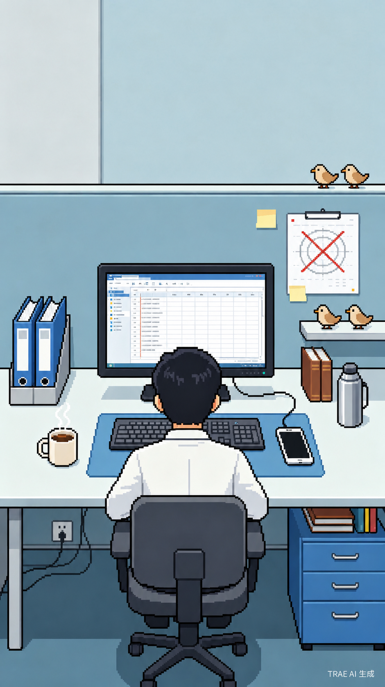

🎵

🕐
当前时间
08:30
今日进度
08:30
12:00
14:00
17:30
🐟
摸鱼积分
0
被抓包风险
0/100
点击"开始摸鱼"开始游戏
谁是摸鱼侠
在上班时间优雅地消失
开始摸鱼
现在做什么？
老板路过！
老板突然从走廊路过，你被抓了个正着！
游戏结束
接受现实
新的一天开始了
准点到达工位
午休时间
12:00 - 14:00
干饭要紧，下午继续摸鱼！
进入下午
今日结算
0
-
-
重新开始